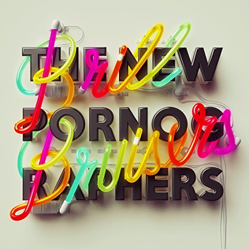

This is the best New Pornographers album since Twin Cinema. The Canadian supergroup excels in celebratory music, and after two somewhat-lackluster offerings with a darker sound, Brill Bruisers is a triumphant return. Frontman A.C. Newman described the record as "a celebration record," and the band follows through completely on that promise, boasting titles such as "Champions of Red Wine" and "Dancehall Domine."
The album begins with the title track, a single with a masterful ear-worm of a wordless chorus. Two lighter celebratory songs follow that sound like they could be from earlier New Pornographers albums, "Champions of Red Wine" and "Fantasy Fools."
Next comes my personal favorite track, "War on the East Coast." Its brilliant 90s-Britpop-style video combined with Dan Bejar's unique vocal stylings make for four minutes of up-tempo bliss. It's one of those songs that feels like you've been waiting to hear for a long time. The song transitions smoothly into "Backstairs," which starts with slow, vocoder vocals but eventually breaks out into one of the band's grooviest verses. Neko Case's golden voice propels along the following "Marching Orders," which concludes one of the strongest trios the band has recorded. "Another Drug Deal of the Heart" serves as a quick, fun epilogue.
This is not to say that there aren't a few misses on the album. "Born With a Sound," another Bejar track, sounds a lot like a watered-down "War on the East Coast." The following "Wide Eyes" has its moments but largely falls flat, with the band coming across as a New Pornographers cover band.
By contrast, "Dancehall Domine" is the band doing what they do best, and has a classic New Pornographers sound. "Spidyr" is a bit of an oddball, but fits in well with "Hi-Rise," both providing a lush respite from the celebrations. Closer "You Tell Me Where" is a hopeful song, and provides a perfect refrain to end the album.
While Brill Bruisers never quite reaches the highs of Mass Romantic or The Electric Version, it's the best New Pornographers record in a long time, and it's a great album for celebration. It's a triumphant return for a triumphant band.
Artist: The New Pornographers
Album: Brill Bruisers
Score: 4.0
Label: Matador
Release: 2014/08/26